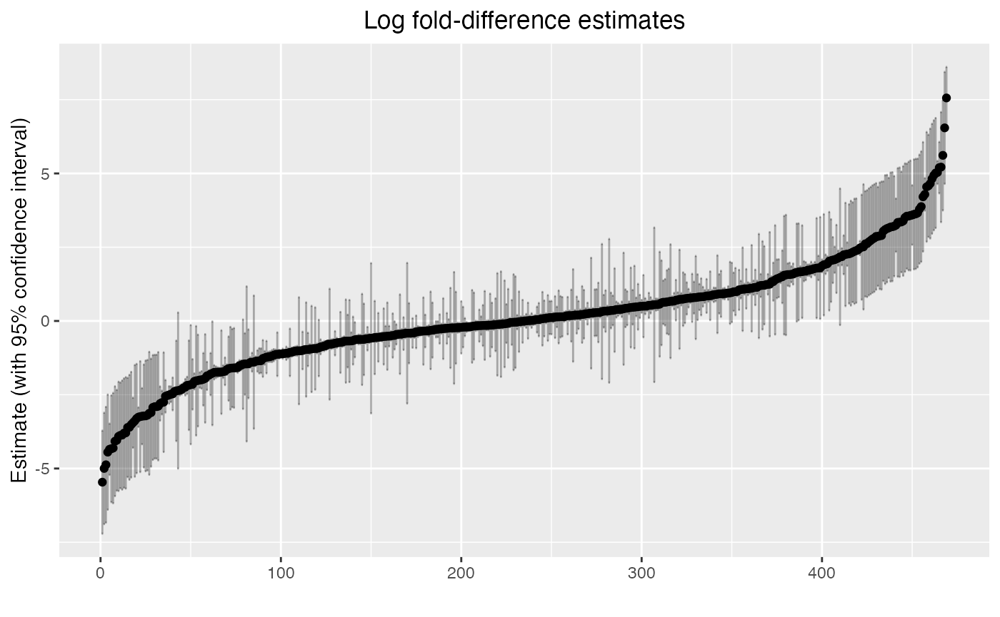

EBAME10: Differential Abundance with anvi'o ouput
Maria Valdez, Amy Willis
2025-10-17
ebame10_pt3.RmdBackground
This lab covers “differential abundance” using metagenomics data,
emphasizing using the outputs of anvi’o’s
anvi-estimate-scg-taxonomy function. You could probably
adapt it to work with anvi-profile-blitz… let us know if
you want that!
It specifically covers the differential abundance method
radEmu. We like this method because it estimates changes in
the “absolute abundance” of microbial taxa, even without absolute
quantification data. Here, “absolute abundance” could be interpreted on
the cell count, cell concentration or DNA concentration scale. Yes! It’s
true! (We talked about this in lecture.)
We’ll illustrate its use on the the Healthy Dairy Workers dataset. We’re interested in estimating changes in microbial abundances before versus after commencing dairy work.
First let’s load libraries we’ll need. Install radEmu only if you don’t already have it installed.
Loading metadata
The metadata is from SRA. Let’s read it in, and remove all columns that are identical for all samples.
meta <- read.table("../data/hdw_metadata.tsv", header = TRUE, row.names = 1) %>%
as_tibble %>%
dplyr::select(where(~ n_distinct(.) > 1))
head(meta)## # A tibble: 6 × 4
## sample_id host_subject_id collection_date replicate.number
## <chr> <chr> <chr> <int>
## 1 S200_V00 S200 2018-03-15 1
## 2 S200_V11 S200 2018-06-25 1
## 3 S200_V22 S200 2018-10-11 1
## 4 S200_V33 S200 2019-03-10 1
## 5 S200_V44 S200 2020-11-09 1
## 6 S201_V00 S201 2018-06-19 1We can see the study collected samples at different points in time
(collection_date) from different hosts
(host_subject_id). How many hosts do we have? And how many
visits per host?
## # A tibble: 9 × 2
## host_subject_id n
## <chr> <int>
## 1 S200 5
## 2 S201 5
## 3 S207 4
## 4 S208 4
## 5 S210 4
## 6 S211 3
## 7 S212 3
## 8 S213 3
## 9 S214 4Creating and loading coverage data
To save time, we’re not going to work with the sequences directly –
we did that for you in advance. But how did I make the data we’re going
to give you? I did coassemblies within subject, then ran
anvi-run-scg-taxonomy on each of my contigs databases. From
there, I estimated the taxonomy as follows:
for file in 03_CONTIGS/*-contigs.db; do
base=$(basename "$file" -contigs.db)
profile="06_MERGED/${base}/PROFILE.db"
output="11_MGX_TAXONOMY/${base}_S2.txt"
anvi-estimate-scg-taxonomy -c $file -p $profile --compute-scg-coverages --metagenome-mode -o $output --scg-name-for-metagenome-mode Ribosomal_S2
doneYou can see that these results went in a folder called
11_MGX_TAXONOMY.
To run radEmu, we need a table with samples in the rows,
taxa in the columns, and entries corresponding to the coverages of each
taxon in each sample. So, we have to turn this data into that form.
We’re going to aggregate at the species level (i.e., we will sum the
coverage of different strains within the same species).
Here’s how you can do that (you can go through this slowly in your own time, and adapt it to your own data). We remove some negative control data; it’s not useful for us here.
coverages_all <- list.files("../data/11_MGX_TAXONOMY/",pattern = "^S.*txt", full.names = T) %>%
lapply(FUN = read_tsv) %>%
bind_rows() %>%
separate(scg_name, sep = "_", into = c("sample_profile_db", NA, "marker", "strain")) %>%
dplyr::select(-percent_identity, -marker, -strain, -NEG_UWTrinh_BS_0001_F05, -NEG_UWTrinh_BS_0001_H05) %>%
pivot_longer(S200_V00:S214_V2B,
names_to = "sample_coverage", values_to = "coverage") %>%
filter(sample_profile_db == substr(sample_coverage,1,4)) %>%
dplyr::select(-sample_profile_db) %>%
rename(sample = sample_coverage) %>%
group_by(sample, t_domain, t_phylum, t_class, t_order, t_family, t_genus, t_species) %>%
summarise(coverage = sum(coverage)) %>%
ungroup() %>%
mutate(taxa = paste0("d__", t_domain, ";p__", t_phylum,
";c__", t_class, ";o__",t_order,";f__",t_family,
";g__", t_genus, ";s__",t_species)) %>%
mutate(sp_name = ifelse(t_species == "None", taxa, t_species) %>% str_replace(" ", "_"))
coverages <- coverages_all %>%
dplyr::select(sample, coverage, sp_name) %>%
pivot_wider(values_from = coverage, values_fill = 0, names_from = sp_name) %>%
column_to_rownames(var="sample") How many species are there?
dim(coverages)## [1] 35 472Based on the dimensions of the metadata and coverage data, how are these data tables related?
rownames(coverages)## [1] "S200_V00" "S200_V11" "S200_V22" "S200_V33" "S200_V44" "S201_V00"
## [7] "S201_V11" "S201_V22" "S201_V33" "S201_V44" "S207_V0A" "S207_V0B"
## [13] "S207_V2A" "S207_V2B" "S208_V0A" "S208_V0B" "S208_V2A" "S208_V2B"
## [19] "S210_V0A" "S210_V0B" "S210_V1A" "S210_V1B" "S211_V00" "S211_V11"
## [25] "S211_V22" "S212_V00" "S212_V11" "S212_V22" "S213_V00" "S213_V11"
## [31] "S213_V22" "S214_V0A" "S214_V0B" "S214_V2A" "S214_V2B"
meta$sample_id## [1] "S200_V00" "S200_V11" "S200_V22" "S200_V33" "S200_V44" "S201_V00"
## [7] "S201_V11" "S201_V22" "S201_V33" "S201_V44" "S207_V0A" "S207_V0B"
## [13] "S207_V2A" "S207_V2B" "S208_V0A" "S208_V0B" "S208_V2A" "S208_V2B"
## [19] "S210_V0A" "S210_V0B" "S210_V1A" "S210_V1B" "S211_V00" "S211_V11"
## [25] "S211_V22" "S212_V00" "S212_V11" "S212_V22" "S213_V00" "S213_V11"
## [31] "S213_V22" "S214_V0A" "S214_V0B" "S214_V2A" "S214_V2B"To keep things simple, if there are technical replicates, we will retain only one. For this, we will remove all samples labelled with a “B” at the end.
coverages <- coverages[!endsWith(rownames(coverages), "B"), ]
meta <- meta %>%
filter(!endsWith(sample_id,"B"))Remember that we’re interested in estimating fold-changes in
microbial abundances before compared to after commencing dairy work. So,
we will create a variable called exposed, which will
differentiate between samples collected at baseline (FALSE: very first
sample collected for each host) and those collected after exposure
(TRUE: samples collected subsequently).
meta <- meta %>%
rownames_to_column("Rownames") %>%
group_by(host_subject_id) %>%
mutate(exposed = (min(collection_date) < collection_date)) %>%
ungroup() %>%
column_to_rownames(var="Rownames")Check we have one exposed and the rest unexposed:
## # A tibble: 18 × 3
## # Groups: host_subject_id [9]
## host_subject_id exposed n
## <chr> <lgl> <int>
## 1 S200 FALSE 1
## 2 S200 TRUE 4
## 3 S201 FALSE 1
## 4 S201 TRUE 4
## 5 S207 FALSE 1
## 6 S207 TRUE 1
## 7 S208 FALSE 1
## 8 S208 TRUE 1
## 9 S210 FALSE 1
## 10 S210 TRUE 1
## 11 S211 FALSE 1
## 12 S211 TRUE 2
## 13 S212 FALSE 1
## 14 S212 TRUE 2
## 15 S213 FALSE 1
## 16 S213 TRUE 2
## 17 S214 FALSE 1
## 18 S214 TRUE 1So that radEmu knows now to connect the metadata and the
coverage data, we need to put the sample labels in the row names:
rownames(meta) <- meta$sample_idFinally, to run radEmu, we need to confirm that all species are detected in at least one sample. (Even if it was true at the beginning, we could have taxa that were only in the removed samples.)
## [1] 27 46927 samples, 469 species, woohoo!
Phew! That was a lot of data processing! That’s usually most of the work!
Now, we can estimate fold-differences.
Fitting a model
The function that we use to fit our model is called
emuFit. Here’s the arguments that we will use:
-
formula: This is a formula tellingemuFitwhat predictors to use. We are using justexposed, but your model could be much more complicated. -
data: The metadata table. -
Y: A matrix or data frame containing our observed abundance data. For us, it’s the coverage table. The rows give the observations (samples), and the columns give the categories (species). -
cluster: (Optional) If samples are correlated, the name of the ‘’groups’’ to which each sample belongs to, making them not independent. In our case, samples from the same host form clusters.
There’s one more important argument to know about:
-
run_score_tests: (Optional) A logical value denoting whether or not to run score tests.
Say NO for now! We’ll come back to this.
Let’s see how the model fitting looks with the variables explained above! This code should take less than a minute to run.
system.time({hdw_fit <- emuFit(formula = ~ exposed,
data = meta,
Y = coverages,
cluster = meta$host_subject_id,
run_score_tests = FALSE)})## user system elapsed
## 11.527 0.322 12.342Let’s look at our results and talk through them together.
hdw_fit##
## Call:
## emuFit(Y = coverages, formula = ~exposed, data = meta, cluster = meta$host_subject_id,
## run_score_tests = FALSE)
##
##
## Coefficient estimates with the largest magnitudes:
## covariate
## 4 exposedTRUE
## 395 exposedTRUE
## 55 exposedTRUE
## 3 exposedTRUE
## 101 exposedTRUE
## 50 exposedTRUE
## 353 exposedTRUE
## 11 exposedTRUE
## 273 exposedTRUE
## 56 exposedTRUE
## 433 exposedTRUE
## 15 exposedTRUE
## 95 exposedTRUE
## 160 exposedTRUE
## 77 exposedTRUE
## 448 exposedTRUE
## 232 exposedTRUE
## 173 exposedTRUE
## 290 exposedTRUE
## 109 exposedTRUE
## category
## 4 Bifidobacterium_bifidum
## 395 Dialister_sp002320515
## 55 Ruminococcus_B_gnavus
## 3 Bifidobacterium_animalis
## 101 Phocaeicola_massiliensis
## 50 d__Bacteria;p__Bacillota_A;c__Clostridia;o__Lachnospirales;f__Lachnospiraceae;g__Merdisoma;s__None
## 353 CALXCQ01_sp944386835
## 11 d__Bacteria;p__Actinomycetota;c__Coriobacteriia;o__Coriobacteriales;f__Eggerthellaceae;g__Eggerthella;s__None
## 273 CAG-353_sp900066885
## 56 d__Bacteria;p__Bacillota_A;c__Clostridia;o__Lachnospirales;f__Lachnospiraceae;g__Ventrimonas;s__None
## 433 Angelakisella_sp900552845
## 15 d__Bacteria;p__Bacillota;c__Bacilli;o__Erysipelotrichales;f__Coprobacillaceae;g__Thomasclavelia;s__None
## 95 Megasphaera_elsdenii
## 160 d__Bacteria;p__Verrucomicrobiota;c__Verrucomicrobiae;o__Verrucomicrobiales;f__Akkermansiaceae;g__Akkermansia;s__None
## 77 Vescimonas_sp000435975
## 448 Merdousia_sp900548275
## 232 UMGS1901_sp900553755
## 173 d__Bacteria;p__Bacillota;c__Bacilli;o__Lactobacillales;f__Lactobacillaceae;g__Weissella;s__None
## 290 d__Bacteria;p__Pseudomonadota;c__Gammaproteobacteria;o__Enterobacterales;f__Enterobacteriaceae;g__Citrobacter;s__None
## 109 Alistipes_onderdonkii
## category_num estimate se lower upper
## 4 4 7.558651 0.5347523 6.510556 8.606746
## 395 395 6.544570 0.9669288 4.649425 8.439716
## 55 55 5.613179 0.9524010 3.746507 7.479850
## 3 3 -5.463178 0.8907733 -7.209062 -3.717295
## 101 101 5.215436 0.9513605 3.350804 7.080068
## 50 50 5.196918 0.4440557 4.326585 6.067252
## 353 353 5.032484 0.1982103 4.643999 5.420969
## 11 11 5.015379 0.9506583 3.152123 6.878636
## 273 273 -4.997699 0.9624874 -6.884140 -3.111259
## 56 56 4.936816 0.9503418 3.074180 6.799451
## 433 433 -4.873355 1.0007881 -6.834863 -2.911846
## 15 15 4.820096 0.9498232 2.958476 6.681715
## 95 95 4.657158 0.9489901 2.797172 6.517145
## 160 160 4.580213 0.8837655 2.848065 6.312362
## 77 77 4.545697 0.9483368 2.686991 6.404403
## 448 448 -4.444996 0.9952633 -6.395676 -2.494315
## 232 232 -4.347533 0.4432254 -5.216239 -3.478827
## 173 173 -4.329899 0.9239342 -6.140777 -2.519021
## 290 290 -4.307836 0.9534411 -6.176546 -2.439126
## 109 109 4.290305 0.2800291 3.741458 4.839152## To obtain the entire coefficient table, use the command `emuFit_object$coef`.The printed output is sorted by the largest estimated effect sizes
(fold differences), but how do we look at a specific species? The way to
access estimated coefficients and confidence intervals from the model is
with hdw_fit$coef. Let’s look at one:
hdw_fit$coef[52, ] ## covariate category category_num estimate se
## 52 exposedTRUE Oliverpabstia_intestinalis 52 2.411388 0.06977598
## lower upper score_stat pval
## 52 2.27463 2.548147 NA NAInterpreting the results
Let’s interpret these results! Here’s three equivalent interpretations:
- We estimate that the average abundance of Oliverpabstia_intestinalis in metagenomes is 11 times greater after commencing dairy work, when compared to the typical fold-differences in the average abundance of taxa across these visits. (Yep – that’s a ratio of ratios.)
We estimate that the log-fold difference in the average abundance of Oliverpabstia_intestinalis in metagenomes from visits post and prior exposure is 2.4 greater than the typical log-fold difference in the average abundance of taxa across these groups. (That’s a difference in differences.)
Under the assumption that most taxa do not differ in average abundance between visits post and prior exposure, we estimate that the abundance of Oliverpabstia_intestinalis in metagenomes from post exposure visits is 11 times greater than prior exposure visits.
By default radEmu compares the log fold difference in
one taxon to the typical (approximately the median) log fold
difference in all taxa. However, radEmu can estimate other
types of parameters. For example, we can compare log fold differences to
the log fold difference for a specific (or reference) taxon. This
vignette shows you how to modify your code to use a reference
taxon.
Please take the time to interpret your estimates, don’t just report p-values.
Ok, that’s one taxon. Let’s look at our results.
hdw_fit$coef %>%
arrange(estimate) %>%
mutate(order = 1:n()) %>%
ggplot(aes(x = order, y = estimate)) +
geom_point() +
geom_errorbar(aes(ymin = lower, ymax = upper), alpha = 0.3) +
labs(x = "", y = "Estimate (with 95% confidence interval)") +
ggtitle("Log fold-difference estimates") +
theme(plot.title = element_text(hjust = 0.5))
Here we can see the distribution of log fold-difference estimates from our model, as well as 95% confidence intervals.
Is this even reasonable?
A quick check…
max(hdw_fit$coef$estimate)## [1] 7.558651## [1] 1917.257
largest_diff <- hdw_fit$coef %>%
tibble %>%
filter(abs(estimate) == max(abs(estimate))) %>%
pull(category)
meta %>%
add_column(coverage = coverages[[largest_diff]]) %>%
dplyr::select(sample_id, exposed, coverage)## sample_id exposed coverage
## S200_V00 S200_V00 FALSE 0.00000
## S200_V11 S200_V11 TRUE 66.49854
## S200_V22 S200_V22 TRUE 252.01276
## S200_V33 S200_V33 TRUE 244.21329
## S200_V44 S200_V44 TRUE 0.00000
## S201_V00 S201_V00 FALSE 0.00000
## S201_V11 S201_V11 TRUE 0.00000
## S201_V22 S201_V22 TRUE 0.00000
## S201_V33 S201_V33 TRUE 0.00000
## S201_V44 S201_V44 TRUE 0.00000
## S207_V0A S207_V0A FALSE 0.00000
## S207_V2A S207_V2A TRUE 0.00000
## S208_V0A S208_V0A FALSE 0.00000
## S208_V2A S208_V2A TRUE 0.00000
## S210_V0A S210_V0A FALSE 0.00000
## S210_V1A S210_V1A TRUE 0.00000
## S211_V00 S211_V00 FALSE 0.00000
## S211_V11 S211_V11 TRUE 363.30792
## S211_V22 S211_V22 TRUE 192.85163
## S212_V00 S212_V00 FALSE 0.00000
## S212_V11 S212_V11 TRUE 0.00000
## S212_V22 S212_V22 TRUE 259.47017
## S213_V00 S213_V00 FALSE 0.00000
## S213_V11 S213_V11 TRUE 0.00000
## S213_V22 S213_V22 TRUE 0.00000
## S214_V0A S214_V0A FALSE 0.00000
## S214_V2A S214_V2A TRUE 0.00000Hypothesis tests and p-values
Now, let’s talk about testing the null hypothesis that a species doesn’t differ in its average abundance before vs after exposure. While its tempting to use the confidence intervals to just say “p<0.05” or “not p<0.05”, there’s a MUCH more reliable way. Robust score tests are the reliable option – but they also take some time.
Let’s start by getting one p-value, then get them all.
To set up this test, we can again run emuFit, giving it
the fitted values that it has already found:
-
formula,dataandYare as before -
hdw_fitis our previous fitted object (the output ofemuFit) -
test_kja data frame listing the indices of the parameters (inhdw_fit$B) that we want to test.
This should take about a minute to run on the RStudio server.
taxa_to_test <- c(134, 372)
covariate_to_test <- which("exposedTRUE" == hdw_fit$B %>% rownames)
two_robust_score_tests <- emuFit(formula = ~ exposed,
data = meta,
Y = coverages,
cluster = meta$host_subject_id,
# we already have hdw_fit, don't recompute this
fitted_model = hdw_fit,
refit = FALSE,
test_kj = data.frame(k = covariate_to_test,
j = taxa_to_test),
# have it tell you when it runs score tests
verbose = TRUE,
# don't need to re-compute confidence intervals
compute_cis = FALSE) Let’s take a look at the test output.
two_robust_score_tests$coef[taxa_to_test[1], "pval"]## [1] 0.2143957
hdw_fit$coef[taxa_to_test, ]## covariate category category_num estimate se
## 134 exposedTRUE Clostridium_sp900543325 134 -2.158088 1.0302755
## 372 exposedTRUE Clostridium_sp000435835 372 2.298507 0.9054109
## lower upper score_stat pval
## 134 -4.1773906 -0.1387848 NA NA
## 372 0.5239343 4.0730799 NA NAWe do not have strong statistical evidence to conclude the fold-difference in abundance of these two taxa before and after exposure is any different than the typical fold-difference. Here’s an example interpretation appropriate for a paper
We estimate that the average abundance of Clostridium_sp900543325 in metagenomes is 8.7 times greater before commencing dairy work, when compared to the typical fold-differences in the average abundance of taxa across these visits (95% CI 1.1–65; $p = $0.21).
In many data analyses, we’d like to run tests for all taxa that we have measured. We could run robust score tests for every taxon in this analysis, but it will take a long time to run all tests serially. They can easily be run in parallel on a computing cluster (for example, if you are in a VM!).
We show you how this might look in the following chunk. There’s a full vignette here.
DO NOT RUN THIS UNLESS YOU HAVE THE TIME AND COMPUTING RESOURCES!
ncores = parallel::detectCores() - 1
emuTest <- function(category) {
score_res <- emuFit(formula = ~ exposed,
data = meta,
fitted_model = hdw_fit,
refit = FALSE,
cluster = meta$host_subject_id,
test_kj = data.frame(k = covariate_to_test,
j = category),
Y = coverages)
return(score_res)
}
if (.Platform$OS.type != "windows" & !identical(Sys.getenv("GITHUB_ACTIONS"), "true")) {
# run if we are on a Mac or Linux machine
score_res <- parallel::mclapply(1:ncol(coverages),
emuTest,
mc.cores = ncores)
} else {
# don't run if we are on a Windows machine, or if testing with GitHub actions
# You can do it! You just would need a different setup. Please reach out!
score_res <- NULL
}
if (!is.null(score_res)) {
c(score_res[[1]]$coef$pval[1], ## robust score test p-value for the first taxon
score_res[[2]]$coef$pval[2]) ## robust score test p-value for the second taxon
}
if (!is.null(score_res)) {
full_score <- sapply(1:length(score_res),
function(x) score_res[[x]]$coef$score_stat[x])
full_pval <- sapply(1:length(score_res),
function(x) score_res[[x]]$coef$pval[x])
full_coef <- hdw_fit$coef %>%
dplyr::select(-score_stat, -pval) %>%
filter(category_num %in% 1:ncol(coverages)) %>%
mutate(score_stat = full_score,
pval = full_pval)
full_coef
}By the way – running this many tests is quite reasonable, but the
computation time increases as the number of predictors and number of
taxa increases. When you need it, the package fastEmu will
be ready for you <3 We recommend using fastEmu over
radEmu when running differential abundance analyses for
very large data sets. That said, you do need to choose a reference set
to use fastEmu, which makes the interpretation of parameter
estimates less intuitive than for radEmu. If you find that
radEmu is taking too long for your differential abundance
analysis, consider trying fastEmu!
A quick constrast with other methods
radEmu isn’t the only differential abundance method.
Some other popular alternatives include ALDEx2,
ANCOM-BC2, and DESeq2. Each of these methods
(and the many differential abundance methods that we didn’t consider
here) have pros and cons. Here’s a list of our opinions on these
methods. These critiques are data-driven, but definitely reflect
our bias.
-
radEmu- pros: low bias, has Type I error rate control in all settings that we tested, handles sparsity well
- cons: robust score tests are slow, especially in data sets with a large number of categories (taxa, genes, etc.)
-
fastEmu- pros: inherits
radEmupros, is much faster thanradEmu(especially with a large number of categories) - cons: an approximate method (rather than an exact method) with a less intuitive target parameter, still slower than several other methods
- pros: inherits
-
ALDEx2- pros: very biased/variable estimates, has Type I error rate control
in many situations, faster than
radEmuto test all categories - cons: has very low power, handles zeroes poorly/weirdly
- pros: very biased/variable estimates, has Type I error rate control
in many situations, faster than
-
ANCOM-BC2- pros: low bias, high power, faster than
radEmuto test all categories - cons: terrible error rate control (i.e. not a valid test), can’t handle data separation (a common consequence of sparsity), relies on questionable sensitivity analysis
- pros: low bias, high power, faster than
-
DESeq2- pros: very biased/variable estimates, faster than
radEmuto test all categories - cons: fails to control Type I error in some situations, tailored for RNA-seq data, not microbiome data, its own developers recommend against it for microbiome data
- pros: very biased/variable estimates, faster than
-
LinDA- pros: faster than
radEmuto test all categories, high power in some settings - cons: biased for largest effect sizes, fails to control Type I error in some situations (large sample sizes with sparse data), handles zeroes poorly/weirdly
- pros: faster than
Check out the documentation for each of these packages for more information and more practice using them. Although this example uses a single binary covariate, each of these methods can be run with more complex regression models.